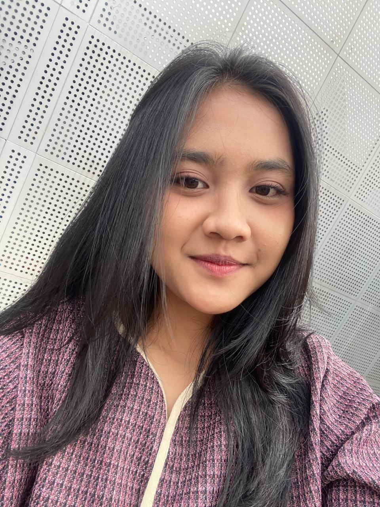
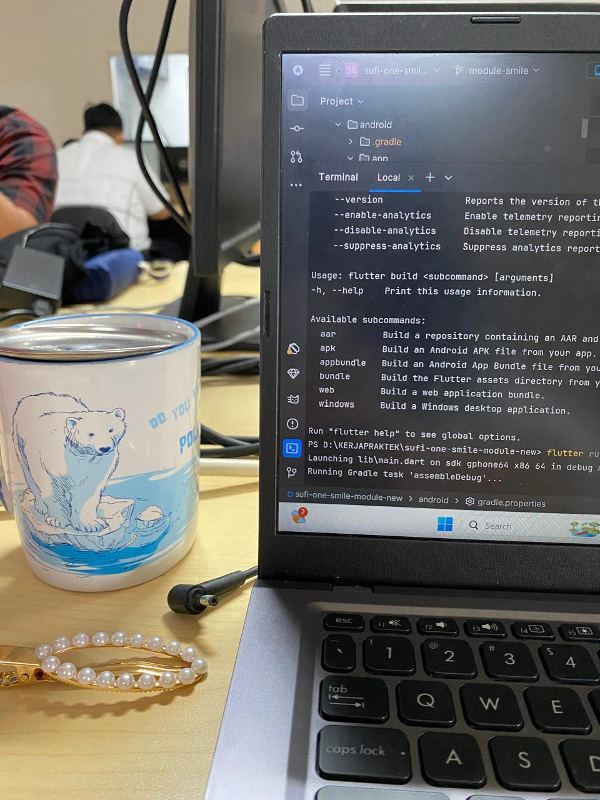
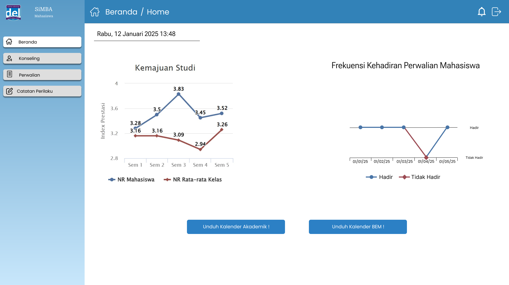
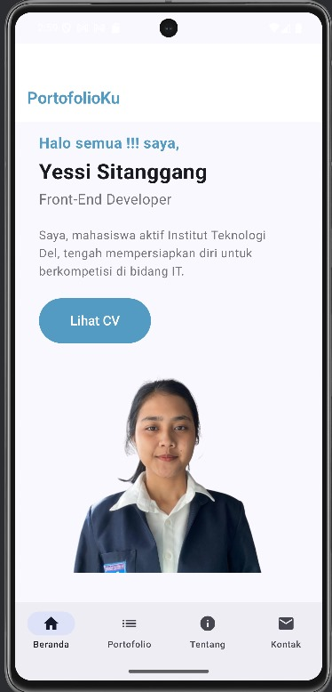
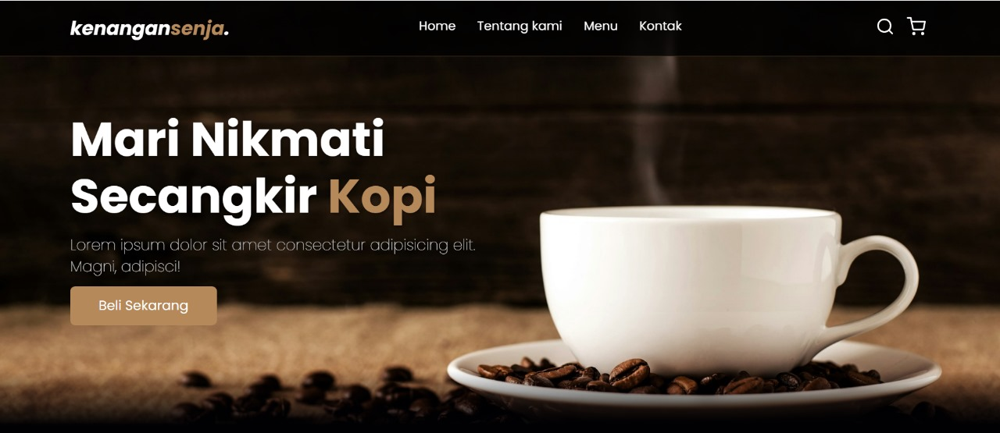
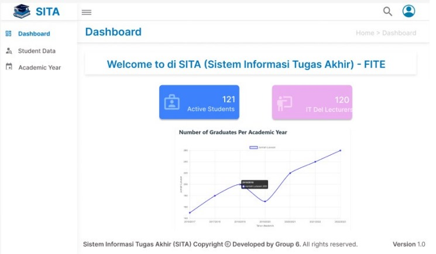
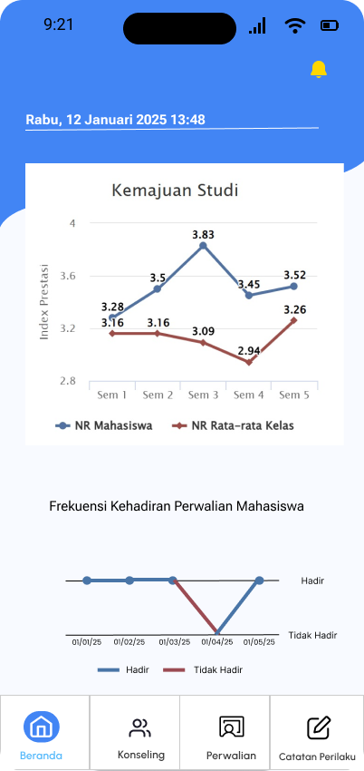
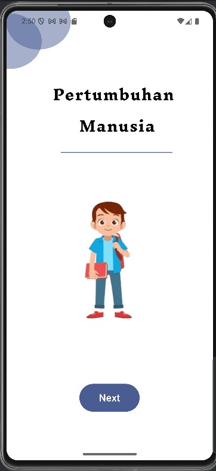
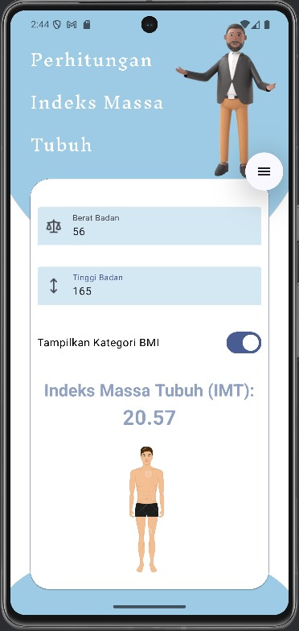
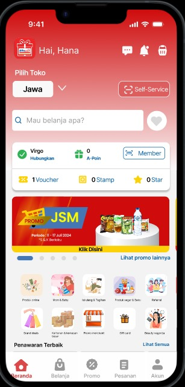

Informatics Graduate from Institut Teknologi Del · Creating beautiful digital experiences with modern technologies and user-centered design ✨

Informatics graduate candidate from Institut Teknologi Del with a GPA of 3.52/4.00 — ranked among merit scholarship recipients for three consecutive semesters. Thesis defense completed; awaiting official graduation (Sep 2026).
Experienced in translating user and business needs into mobile and web solutions using Flutter, Dart, Kotlin, Laravel, C#, and more. Strong foundation in UI/UX, REST API integration, databases, and Functional Specification Document implementation.
Demonstrated leadership as a Scrum Team Leader across multiple projects, lecturer assistant for Basic Mathematics I & II, student mentor (Kakak Asuh), and organization member — building strong communication, team coordination, and user-driven decision-making skills.
Completed three sequential internships at PT. Tera Multi Wahana, PT. Suzuki Finance Indonesia, and Zonaebt.com — gaining real-world experience in cross-functional collaboration, system development, and agile workflows. Passionate about creating meaningful solutions and continuously learning.

"Experienced in translating user and business needs into digital solutions — ready to grow and lead with purpose 💜"








Developed and enhanced 50+ features for the Distributor Management System (DMS) by translating Functional Specification Documents into production-ready features using Flutter, Dart, C#, and SQL Server. Collaborated with system analysts and support teams in a cross-functional environment.
Developed the SMILE module for the SUFI ONE mobile app using Flutter and Dart — features include direct visit, task visit, history visit, and bearer token authentication. Improved marketing reporting workflow with a user-oriented mobile interface.
Built the ZonaEBT Carbon Calculator website from scratch using Laravel — implementing carbon footprint calculation based on scientific formulas and designing a responsive user interface in collaboration with UI/UX and research teams.
Contributed to a CNN-based research using MobileNetV3 architecture for facial skin disorder classification — supporting dataset collection, preparation, and model analysis.
Conducted weekly tutoring sessions covering material reviews, guided discussions, and problem-solving exercises. Coordinated with the main lecturer to monitor student progress and provide constructive academic feedback.
Graduated with Distinction predicate and final score of 88. Successfully designed and prototyped innovative UI/UX improvement features for the Alfagift application.
I'm always excited to work on new projects and bring creative ideas to life. Let's discuss how we can create something amazing together!